Dashboard specs
Every project ends in dashboards: fifteen in all. Each one below has the person who owns it, who reads it, the questions it must answer, the KPI definitions, its filters, refresh SLA and access rules, and a lo-fi wireframe the owner sketched for you. The wireframes are sketches: they fix what goes on the page, not how it looks. The look comes from the brand kit.
All fifteen at a glance
| ID | Dashboard | Department | Owner | KPIs | Conflicts | Checklist |
|---|---|---|---|---|---|---|
| P1-D1 | Data Platform Health | IT | Sam Okafor | 8 | 1 | 0 of 7 |
| P2-D1 | Warehouse Ops Scorecard | Operations | Luis Moreno | 8 | 6 | 0 of 7 |
| P2-D2 | Site Operations Detail | Operations | Shanice Carter | 9 | – | 0 of 7 |
| P3-D1 | Revenue Assurance | Finance | Alan Brooks | 7 | 1 | 0 of 7 |
| P3-D2 | AR & Cash | Finance | Rebecca Lindqvist | 6 | 1 | 0 of 7 |
| P3-D3 | Warehouse P&L vs Budget | Finance | Rebecca Lindqvist | 6 | 1 | 0 of 7 |
| P4-D1 | Freight Audit | Transportation | Beth Kowalczyk | 7 | – | 0 of 7 |
| P4-D2 | Carrier Scorecard | Transportation | Beth Kowalczyk | 8 | 2 | 0 of 7 |
| P5-D1 | Sales Pipeline | Sales | Hannah Price | 7 | 3 | 0 of 7 |
| P5-D2 | Client Health 360 | Client Success | Omar Haddad | 9 | 4 | 0 of 7 |
| P6-D1 | Live Operations Board | Operations | Luis Moreno | 7 | 2 | 0 of 7 |
| P7-D1 | Cold Chain Monitor | Quality | Dr. Ayesha Khan | 8 | 2 | 0 of 7 |
| P7-D2 | Recall Trace | Quality | Dr. Ayesha Khan | 8 | – | 0 of 7 |
| P8-D1 | Client Portal | Client Success | Omar Haddad | 7 | 2 | 0 of 7 |
| P8-D2 | Executive Scorecard | Executive | Daniel Reyes | 10 | 1 | 0 of 7 |
Conflicting definitions are on purpose
“On time”, “in full”, “revenue” and a few others mean different things to Operations, Client Success and Finance. Where a KPI below has a Conflict note, do not pick a winner yourself: ask the people it names (your AI chat colleagues on the team page), write the agreed definition into your metric catalog, and say on the dashboard which definition a tile uses.
Who to ask about which conflict
| Person | KPIs where their definition matters |
|---|---|
| Luis Moreno VP Operations | P2-D1 OTIF · P2-D1 On-time ship · P2-D1 Order cycle time (median, business hours) · P2-D1 Pick productivity · P2-D1 Inventory accuracy · P5-D2 Case rate per 1,000 orders · P6-D1 Orders at risk · P7-D1 Time in range · P7-D1 Excursions · P8-D2 Gross margin % |
| Omar Haddad Director of Client Success | P2-D1 OTIF · P2-D1 On-time ship · P4-D2 On-time delivery (carrier commitment) · P5-D1 Expansion share · P5-D2 Health score (0–100) · P5-D2 Case rate per 1,000 orders · P6-D1 Orders at risk · P8-D1 Ship on time vs contract SLA |
| Alan Brooks Corporate Controller | P2-D1 On-time ship · P3-D1 FX rate gap · P3-D2 DSO · P3-D3 FX translation effect · P8-D1 Month-to-date billing |
| Rebecca Lindqvist Chief Financial Officer | P3-D1 FX rate gap · P3-D2 DSO · P3-D3 FX translation effect · P5-D1 Open pipeline (USD) · P8-D2 Gross margin % |
| Hannah Price Director of Sales Operations | P5-D1 Open pipeline (USD) · P5-D1 Win rate · P5-D1 Expansion share · P5-D2 Health score (0–100) |
| Shanice Carter General Manager, ATL1 | P2-D1 Order cycle time (median, business hours) · P2-D1 Dock-to-stock (median, business hours) · P2-D1 Pick productivity |
| Daniel Reyes Chief Executive Officer | P5-D1 Win rate · P8-D2 Gross margin % |
| Sam Okafor Director of IT | P1-D1 Sources fresh |
| Kevin O'Hara IT Infrastructure Engineer | P1-D1 Sources fresh |
| Beth Kowalczyk Transportation Manager | P4-D2 On-time delivery (carrier commitment) |
| Dr. Ayesha Khan Quality & Food Safety Manager | P7-D1 Time in range |
Every dashboard is done when
- Each KPI has one written definition, signed off by its owner, and conflicts are recorded.
- The model behind it is in your gold layer, tested, and refreshed inside the SLA.
- Access rules are enforced in the data (row-level security, masking), not only hidden in the report.
- It follows the brand kit, and every page renders in under 3 seconds.
- Iris Novak signed it off: she tied its numbers back to the sources and found nothing open that blocks it.
- You walked the owner through it, and their feedback is in the Tracker.
Project 1 · Data Platform Foundation
One trusted, cheap, boring platform for everything that follows. Requested by Sam Okafor (Director of IT).
P1-D1 · Data Platform Health
0 of 7IT1 conflicting definition
- Owner
- Sam Okafor (Director of IT)
- Audience
- Sam Okafor (Director of IT, daily 07:00 check), Kevin O'Hara (infrastructure on-call), Mei Tanaka (monthly security review) and the data engineer
- Refresh SLA
- After every pipeline run (scheduled or manual) and at least hourly; never more than 60 minutes behind the latest run. Last-refresh time in the footer.
- Access
- IT only - Sam Okafor, Kevin O'Hara, Mei Tanaka and the data engineer. No consumer PII anywhere; DQ sample keys show surrogate or business keys, never ship_to_* values.

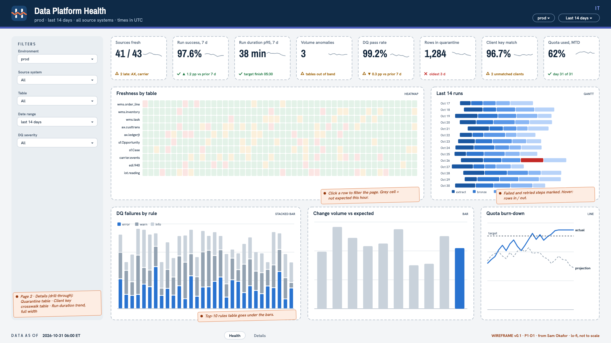

Questions it must answer
- Can yesterday's data be trusted, source by source?
- Which tables are late, by how much, and since when?
- Did last night's runs succeed, how long did they take, and are durations creeping up?
- Are the inserts, updates and deletes captured in the last run normal for this day of the week?
- What did data quality catch, how severe is it, and is it getting better or worse?
- What is sitting in quarantine, and who owns it?
- How well do client keys line up across WMS, AX and Salesforce?
- How much of the free-tier quota or budget have we used, and when do we run out at this rate?
Filters
- Environment (dev / prod; default prod)
- Source system (WMS, AX 2012, Salesforce, carrier API, EDI, files, IoT)
- Table
- Date range (default last 14 days)
- DQ severity (error / warn)
KPI definitions
| KPI | Definition |
|---|---|
| Sources fresh | Share of monitored source tables whose newest data is within the freshness SLA set for that table in the ingestion config, at the time of the dashboard refresh. Conflict. Sam thinks of freshness as the age of the newest source change that has reached silver; Kevin O'Hara thinks of it as time since the last successful run. Agree with both which clock the tile uses, and label it on screen. |
| Run success rate (7 days) | Scheduled runs that finished successfully ÷ scheduled runs, last 7 days. A run that needed manual intervention to finish counts as failed. |
| Run duration p95 (7 days) | 95th percentile of end-to-end scheduled run duration over the last 7 days, with the delta vs the previous 7 days. |
| Volume anomalies | Number of source tables whose inserts, updates or deletes in the last run fall outside the expected band (same-weekday baseline over the previous 4 weeks, adjusted for peak season). |
| DQ pass rate | Rows passing ÷ rows checked across all error-level rules in the last run. Warn-level results are shown separately and don't affect this tile. |
| Rows in quarantine | Rows currently held in quarantine and not yet re-processed, all tables. |
| Client key match rate | Share of active WMS owners matched to exactly one AX customer in each legal entity they're invoiced from and exactly one Salesforce Account. |
| Quota used (month to date) | Platform usage month to date ÷ the free-tier quota or the budget Sam set, with a straight-line projection to month end. The unit (DBUs, credits or a documented proxy) is shown on the tile. |
Visuals and layout from the spec
| Visual | Type | Notes |
|---|---|---|
| KPI row | kpi tiles | Eight tiles; value, delta vs previous period, status dot using the brand good/warn/bad colours |
| Freshness by table | heatmap | Rows are source tables grouped by system; columns are the last 48 hourly checks; cell = on time / late / missing. Clicking a row filters the page |
| Last 14 runs | gantt | One bar per run split into steps (extract, bronze, silver, DQ, gold); failed and retried steps marked; hover shows rows in and out |
| Change volume vs expected | bar | Per table, inserts / updates / deletes captured in the last run, with the expected band drawn behind each bar; out-of-band tables highlighted |
| DQ failures by rule | stacked bar | Daily failed rows by severity for 30 days, with a top-10 rules table underneath (rule, table, owner, first seen, 14-day sparkline) |
| Quota burn-down | line | Cumulative usage this month vs the quota or budget line, with projection; backfill days annotated |
| Run duration trend | line | Daily p50 and p95 end-to-end duration for 90 days, with the target finish time as a reference line |
| Quarantine | table | Table, rule, rows held, age of the oldest row, owner; sorted by rows held |
| Client key crosswalk | table | Unmatched or ambiguous clients per system pair with a reason category (blank key, formatting difference, no candidate, several candidates). Codes and account numbers only, never consumer PII |
1920×1080, Harborline light dashboard background with the IT department accent.
Header band: Harborline lockup left, title "Data Platform Health", environment toggle and last-refresh time right.
Left filter rail (240 px): environment, source system, table, date range, DQ severity.
Row 1: eight KPI tiles across the full width.
Row 2: "Freshness by table" heatmap (left, 65%) and "Last 14 runs" Gantt (right, 35%).
Row 3: "DQ failures by rule" with its top-10 table (left, 40%), "Change volume vs expected" (middle, 35%), "Quota burn-down" (right, 25%).
Drill-through page "Details": "Quarantine" table (left, 50%) and "Client key crosswalk" table (right, 50%); "Run duration trend" full width below.
Footer: data freshness, dashboard version, link to the runbook and KPI definitions.
Project 2 · Warehouse Performance Scorecard
One set of Ops numbers every GM trusts. Requested by Luis Moreno (VP Operations).
P2-D1 · Warehouse Ops Scorecard
0 of 7Operations6 conflicting definitions
- Owner
- Luis Moreno (VP Operations)
- Audience
- Luis Moreno (VP Operations, Monday 07:30 ops call), the eight site GMs, Daniel Reyes (CEO)
- Refresh SLA
- Daily; the previous local day complete for every site by 06:00 America/New_York, before the 07:30 Monday ops call. Data-through date per site in the footer.
- Access
- Operations leadership (Luis Moreno), all site GMs (including Shanice Carter) and the CEO (Daniel Reyes) see all sites with client-level detail. Internal only. No consumer PII and no worker names on this dashboard.

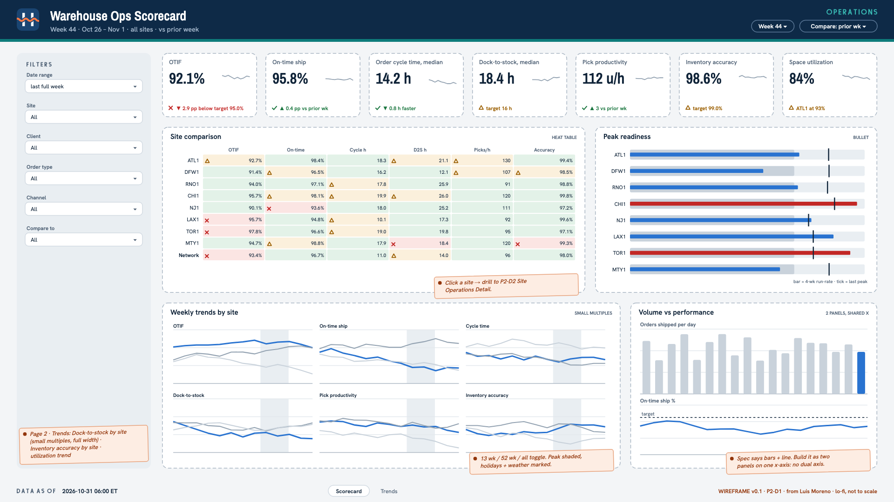

Questions it must answer
- Which sites are hitting their targets this week, and which are slipping?
- How have OTIF, cycle time, dock-to-stock, pick productivity, inventory accuracy and space utilization moved over 13 weeks, a year, and the full history?
- Is a bad week explained by volume, weather, holidays, or something inside the building?
- How does each site compare with the network on exactly the same definitions?
- Which site is most likely to break first in peak season?
Filters
- Date range (week / month / custom; default last full week)
- Site
- Client
- Order type (B2C / B2B)
- Channel (EDI / API / PORTAL / CSV)
- Compare to (prior period / same period last year)
KPI definitions
| KPI | Definition |
|---|---|
| OTIF | Shipped orders that were both on time (the on-time variant the metric catalog assigns to the Ops scorecard) and in full (per the catalog's in-full rule) ÷ shipped orders. Cancelled orders excluded. Conflict. Operations and Client Success disagree on what counts as in full (units or lines; client-approved short ships). Agree it with Luis Moreno and Omar Haddad and record it in the metric catalog (P2.S5). |
| On-time ship | Orders shipped by their ship-by date (site cutoffs, business-day calendar and requested ship date, P2.S2.T5) ÷ orders due to ship in the period. Conflict. Operations, Client Success and Finance each start and stop the on-time clock differently and exclude different things. Record all three with Luis Moreno, Omar Haddad and Alan Brooks; this tile shows only the variant the catalog names for Ops. |
| Order cycle time (median, business hours) | Median business hours from order received in the WMS to shipped, using the site calendar; p90 on hover. Conflict. Some GMs start the clock at release to the floor, not at receipt. Agree with Luis Moreno and Shanice Carter. |
| Dock-to-stock (median, business hours) | Median business hours per receipt from the agreed start event to the agreed stop event (P2.S3.T4). Conflict. The floor debates whether the clock starts at trailer arrival or at the start of receiving, and stops at receipt complete or putaway complete. Confirm with Shanice Carter. |
| Pick productivity | Units (or lines, as the catalog says) picked per productive labor hour, split by order type, with the denominator agreed in P2.S4.T3. Conflict. Scan-to-scan time, task time and paid shift hours give different answers. Agreed with Shanice Carter; Luis approves the scorecard version. |
| Inventory accuracy | Per the catalog - approved cycle counts with no variance ÷ approved cycle counts (location accuracy), with unit accuracy (1 − |variance units| ÷ system units) alongside. Recounts aren't counted twice. Conflict. Sites report location hit rate; Finance cares about value-weighted accuracy. Confirm which one leads with Luis Moreno. |
| Space utilization | Occupied pallet positions and pick faces at end of day ÷ capacity in effect on that date (warehouse master history). |
| Orders and units shipped | Count of shipped orders and sum of shipped units in the period; context for every rate above. |
Visuals and layout from the spec
| Visual | Type | Notes |
|---|---|---|
| KPI row | kpi tiles | Six scorecard KPIs (OTIF, on-time ship, cycle time, dock-to-stock, pick productivity, inventory accuracy) plus utilization; value, target, delta vs prior week, 13-week sparkline, status colour vs target |
| Site comparison | heat table | Eight sites (rows) × scorecard KPIs (columns), each cell coloured vs target; network row at the bottom; click a site to filter or drill to P2-D2 |
| Weekly trends by site | small multiples | One line chart per KPI, sites as series; range toggle 13 weeks / 52 weeks / full history; peak season shaded; holiday markers; weather annotations (snowfall, heavy precipitation) from the reference data |
| Volume vs performance | combo | Orders shipped per day (bars) vs on-time ship % (line) for the selected site, so volume problems can be told apart from process problems |
| Peak readiness | bullet | Per site, current 4-week run-rate vs the site's last peak for orders, utilization and productivity; at-risk rule in the tooltip |
| Dock-to-stock by site | small multiples | Weekly median dock-to-stock per site, full history available; target line |
| Inventory accuracy by site | bar | Weekly location and unit accuracy per site with target line |
1920×1080, Harborline light dashboard background with the Operations department accent.
Header band: Harborline lockup left, title "Warehouse Ops Scorecard", selected week and data-through time right.
Left filter rail (240 px): date range, site, client, order type, channel, compare-to.
Row 1: seven KPI tiles across the full width (six scorecard KPIs plus utilization).
Row 2: "Site comparison" heat table (left, 60%) and "Peak readiness" bullets (right, 40%).
Row 3: "Weekly trends by site" small multiples (left, 65%) and "Volume vs performance" (right, 35%).
Page 2 "Trends": "Dock-to-stock by site" small multiples (full width), then "Inventory accuracy by site" (left, 50%) and a utilization trend (right, 50%).
Footer: data freshness per site, link to the metric catalog, dashboard version.
P2-D2 · Site Operations Detail
0 of 7Operations
- Owner
- Shanice Carter (General Manager)
- Audience
- Site GMs (Shanice Carter at ATL1 and her peers) and their shift leads; Luis Moreno for drill-downs
- Refresh SLA
- Daily by 06:00 America/New_York with the previous local day complete. Same-day refresh every 4 hours during operating hours is a stretch goal; Project 6 makes this view live.
- Access
- Every GM sees operational metrics for all sites, but worker-level productivity (Worker detail, worker drill-downs) only for their own site; Luis Moreno sees worker-level detail for all sites. Worker names are employee data, so the worker table can't be exported. No consumer PII.

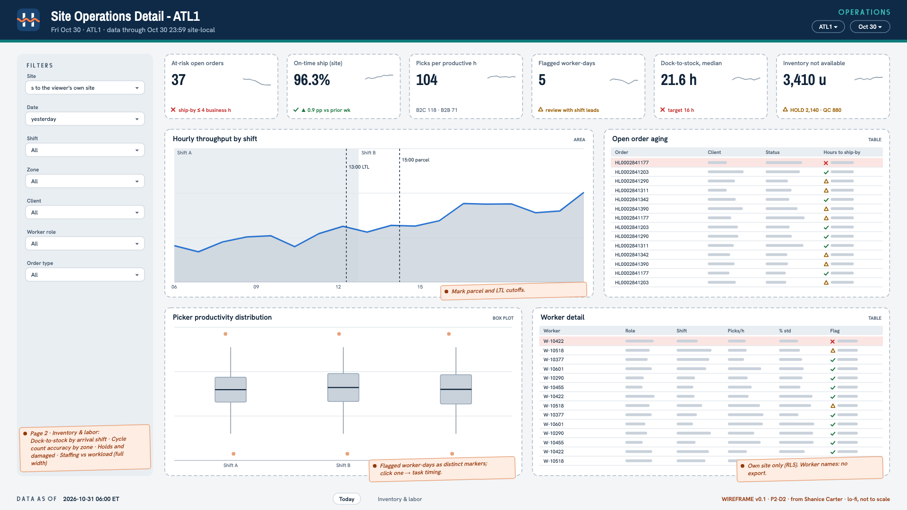

Questions it must answer
- Which shift, zone or client is behind today and this week?
- Which open orders are at risk of missing their ship-by time?
- How productive is each picker and each shift, and which numbers look too good or too bad to be true?
- How long does received stock take to become available, by the shift it arrived on?
- Where are cycle counts finding variances, and what is on hold and why?
- Were we staffed for the work that arrived?
Filters
- Site (defaults to the viewer's own site)
- Date (default yesterday)
- Shift
- Zone
- Client
- Worker role
- Order type (B2C / B2B)
KPI definitions
| KPI | Definition |
|---|---|
| At-risk open orders | Open orders not yet packed whose ship-by time is within the next 4 business hours or already past. |
| On-time ship (site) | Same catalog definition as P2-D1, shown by shift and zone. |
| Picks per productive hour | Per the catalog definition agreed with Shanice Carter (P2.S4.T3), by worker, shift and zone, split by order type. |
| Flagged worker-days | Worker-days flagged by the outlier rules agreed with Shanice Carter (P2.S4.T5). Flags carry their evidence and never remove data from totals. |
| Productivity vs standard | Actual picks per productive hour ÷ the engineered standard for the order type, by shift. |
| Dock-to-stock by arrival shift | Median and p90 business hours per receipt, grouped by the shift the trailer arrived on. |
| Cycle count accuracy by zone | Approved counts with no variance ÷ approved counts, plus net and absolute variance units, by zone and week. |
| Inventory not available | Units and pallets in HOLD, QC or DAMAGED status at end of day, by reason and age band. |
| Headcount vs workload | Active pickers and packers per shift (worker dimension) next to tasks and units that arrived for that shift. |
Visuals and layout from the spec
| Visual | Type | Notes |
|---|---|---|
| KPI row | kpi tiles | At-risk orders, on-time ship, picks per hour, flagged worker-days, dock-to-stock, inventory not available |
| Hourly throughput by shift | area | Units picked and orders shipped per hour for the selected day; shift bands shaded; parcel and LTL cutoffs marked |
| Open order aging | table | Open orders by status and hours to ship-by, at-risk rows highlighted; order number and client only, no ship-to data |
| Picker productivity distribution | box plot | Per shift, the distribution of picks per productive hour across worker-days; flagged worker-days drawn as distinct markers; clicking one opens its task timing detail (time between consecutive task completions across the shift) |
| Worker detail | table | Worker, role, shift, productive hours, picks, picks per hour, % of standard, flag; visible only under the access rule below |
| Dock-to-stock by arrival shift | bar | Median and p90 by arrival shift, weekly for 26 weeks |
| Cycle count accuracy by zone | heatmap | Zone × week, colour = unit accuracy (sequential palette) |
| Holds and damaged | stacked bar | Units not available by reason, stacked by age band |
| Staffing vs workload | combo | Headcount per shift (bars) vs tasks arrived (line), daily for 8 weeks |
1920×1080, Harborline light dashboard background with the Operations department accent.
Header band: Harborline lockup left, title "Site Operations Detail - <site>", date and data-through time right.
Left filter rail (240 px): site, date, shift, zone, client, worker role, order type.
Row 1: six KPI tiles across the full width.
Row 2: "Hourly throughput by shift" (left, 60%) and "Open order aging" table (right, 40%).
Row 3: "Picker productivity distribution" (left, 50%) and "Worker detail" table (right, 50%).
Page 2 "Inventory & labor": "Dock-to-stock by arrival shift" (left, 33%), "Cycle count accuracy by zone" (middle, 33%), "Holds and damaged" (right, 33%); "Staffing vs workload" full width below.
Footer: data freshness, metric catalog link, access notice ("worker-level data restricted").
Project 3 · Billing Assurance & AR
Every dollar from contract to cash, explained. Requested by Rebecca Lindqvist (Chief Financial Officer).
P3-D1 · Revenue Assurance
0 of 7Finance1 conflicting definition
- Owner
- Alan Brooks (Corporate Controller)
- Audience
- Alan Brooks (Controller) and the billing analysts, weekly and before each month-end close; Rebecca Lindqvist (CFO); Daniel Reyes for the headline
- Refresh SLA
- Daily by 07:00 America/New_York. Once Alan marks a month closed, that month is frozen and labelled "closed".
- Access
- Finance (Rebecca Lindqvist, Alan Brooks, Priya Raman) and the CEO (Daniel Reyes) only. Not Operations or Sales; Hannah Price receives an export of rate-card mismatches on request.

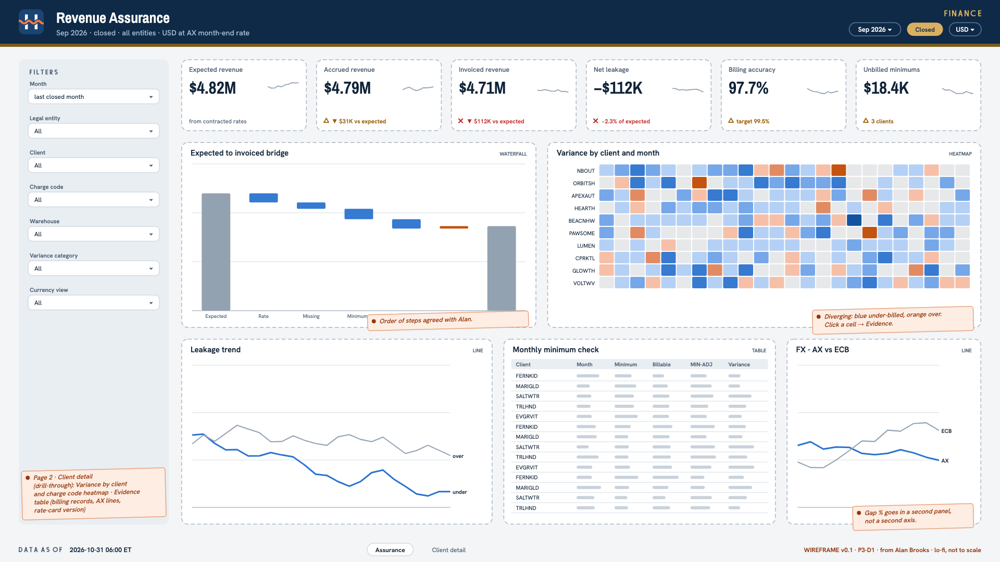

Questions it must answer
- For each client, charge code and month, what should we have billed, what did the WMS accrue, and what did AX invoice?
- Where is revenue leaking or over-billed, how much, and since when?
- Are monthly minimums invoiced whenever activity falls short?
- Which variances are rate problems, missing charges, timing, or currency?
- How far are our booked FX rates from the market, and what is the difference worth?
Filters
- Month (and month range; default last closed month)
- Legal entity (us01 / ca01 / mx01)
- Client
- Charge code
- Warehouse
- Variance category
- Currency view (billing currency / USD)
KPI definitions
| KPI | Definition |
|---|---|
| Expected revenue | Billable activity × the contract rate in effect on the activity date (Salesforce rate-card version), plus contracted minimum adjustments; billing currency and USD per the currency policy. |
| Accrued revenue | Sum of WMS billing_record amounts for the period, excluding VOID. |
| Invoiced revenue | Sum of AX invoice-line amounts for billing charge codes in the period, with credit notes (invoices with negative amounts) netted exactly once. |
| Net leakage | Expected − invoiced, in USD; positive means under-billed. Over-billing is shown as its own figure and never silently netted away. |
| Billing accuracy | Share of client × charge code × month cells where |expected − invoiced| is within the materiality threshold agreed with Alan Brooks. |
| Unbilled minimums | Sum over client-months of (contracted monthly minimum − billable activity) where activity was below the minimum and no matching MIN-ADJ was invoiced. |
| FX rate gap | Average % difference between the AX accounting rate and the ECB reference rate for the invoice month, by currency, and its USD revenue effect. Conflict. Alan treats the AX rate as correct by policy; Rebecca wants the gap to the market visible. Record both views (P3.S3.T3) and label the tile accordingly. |
Visuals and layout from the spec
| Visual | Type | Notes |
|---|---|---|
| KPI row | kpi tiles | Expected, accrued, invoiced, net leakage, billing accuracy, unbilled minimums; delta vs prior month |
| Expected to invoiced bridge | waterfall | Expected → rate variances → missing charges → unbilled minimums → timing → FX/rounding → invoiced, for the selected period |
| Variance by client and month | heatmap | Clients (rows) × months (columns, 24), colour = variance % on a diverging palette (under vs over); click a cell to drill to evidence |
| Variance by client and charge code | heatmap | Clients × charge codes for the selected month range, diverging palette |
| Leakage trend | line | Monthly under-billing and over-billing in USD as separate series, 24 months |
| Monthly minimum check | table | Client, month, contracted minimum, billable activity, MIN-ADJ expected vs invoiced, variance |
| FX - AX vs ECB | line | Monthly AX accounting rate vs ECB monthly average for EUR, GBP, CAD and MXN against USD, with the gap % as bars on a second panel |
| Evidence | table | Drill-through: billing records and AX invoice lines behind a cell, with the rate-card version and WMS rate in effect |
1920×1080, Harborline light dashboard background with the Finance department accent.
Header band: Harborline lockup left, title "Revenue Assurance", selected period, closed/open badge and last-refresh time right.
Left filter rail (240 px): month, legal entity, client, charge code, warehouse, variance category, currency view.
Row 1: six KPI tiles across the full width.
Row 2: "Expected to invoiced bridge" waterfall (left, 45%) and "Variance by client and month" heatmap (right, 55%).
Row 3: "Leakage trend" (left, 40%), "Monthly minimum check" table (middle, 35%), "FX - AX vs ECB" (right, 25%).
Drill-through page "Client detail": "Variance by client and charge code" heatmap (top, full width) and "Evidence" table (bottom, full width).
Footer: data freshness, link to the currency policy and metric definitions, dashboard version.
P3-D2 · AR & Cash
0 of 7Finance1 conflicting definition
- Owner
- Rebecca Lindqvist (Chief Financial Officer)
- Audience
- Rebecca Lindqvist (CFO) for the monthly board pack; Alan Brooks and collections weekly; Daniel Reyes
- Refresh SLA
- Daily by 07:00 America/New_York; month-end snapshots frozen at close.
- Access
- Finance (Rebecca Lindqvist, Alan Brooks, Priya Raman) and Daniel Reyes only. Client Success gets client payment signals through Project 5, not through this dashboard.

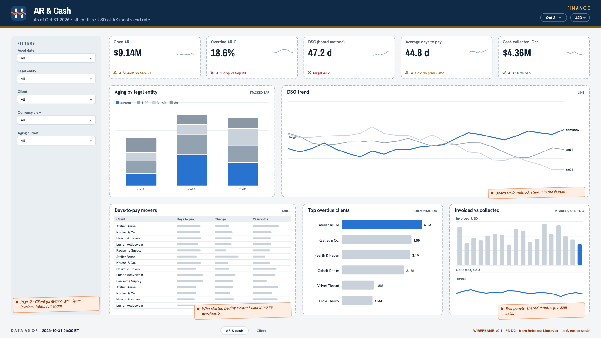

Questions it must answer
- How much do clients owe us, by legal entity and client, and how late is it?
- Is DSO improving or getting worse, for the company and for each client?
- Which clients are paying slower than they used to?
- How much cash came in this month compared with what we invoiced?
- Which invoices are short-paid and still open?
Filters
- As-of date (any past month-end or today)
- Legal entity
- Client
- Currency view (transaction / entity / USD)
- Aging bucket
KPI definitions
| KPI | Definition |
|---|---|
| Open AR | Sum of open amounts as of the selected date, reconstructed from customer transactions and settlements; USD per the currency policy, with entity-currency detail. |
| Overdue AR % | Open AR past its due date ÷ open AR, as of the selected date. |
| DSO | Days sales outstanding calculated with the method Rebecca Lindqvist specifies (the board method), monthly, by entity and client. Conflict. Rebecca and Alan compute DSO differently (look-back period and method). The board method leads here; the alternative appears only if they still differ after P3.S5.T3, clearly labelled. |
| Average days to pay | Invoice-amount-weighted average of (settlement date − invoice date) for invoices fully settled in the period, by client. |
| Cash collected | Sum of payments applied in the period, by legal entity, in USD. |
| Short-paid open invoices | Invoices with at least one settlement whose remaining open amount is past due, count and amount. |
Visuals and layout from the spec
| Visual | Type | Notes |
|---|---|---|
| KPI row | kpi tiles | Open AR, overdue %, DSO, cash collected (month), short-paid invoices; delta vs prior month-end |
| Aging by legal entity | stacked bar | Buckets agreed with Alan, one bar per entity, USD |
| DSO trend | line | 18 months, one line per entity plus company total, board method; target line |
| Days-to-pay movers | table | Clients ranked by change in average days to pay (last 3 months vs previous 6), with a 12-month sparkline per client |
| Top overdue clients | horizontal bar | Top 10 clients by overdue amount, split by aging bucket |
| Invoiced vs collected | combo | Monthly invoiced (bars) vs cash collected (line), 18 months |
| Open invoices | table | Drill-through for a client: invoice, invoice date, due date, amount, settled, open, days past due, short-paid flag |
1920×1080, Harborline light dashboard background with the Finance department accent.
Header band: Harborline lockup left, title "AR & Cash", as-of date and last-refresh time right.
Left filter rail (240 px): as-of date, legal entity, client, currency view, aging bucket.
Row 1: five KPI tiles across the full width.
Row 2: "Aging by legal entity" (left, 35%) and "DSO trend" (right, 65%).
Row 3: "Days-to-pay movers" table (left, 40%), "Top overdue clients" (middle, 30%), "Invoiced vs collected" (right, 30%).
Drill-through page "Client": "Open invoices" table, full width.
Footer: data freshness, DSO method statement, dashboard version.
P3-D3 · Warehouse P&L vs Budget
0 of 7Finance1 conflicting definition
- Owner
- Rebecca Lindqvist (Chief Financial Officer)
- Audience
- Rebecca Lindqvist and Alan Brooks (monthly pack); Daniel Reyes; Luis Moreno and the site GMs for their own sites
- Refresh SLA
- Daily by 07:00 America/New_York during the month; frozen at month-end close; a new budget version is available within one day of the workbook landing.
- Access
- Finance and the CEO see all sites. Luis Moreno sees all sites' P&L; each GM sees only their own site (row-level security). Operations see no client-level revenue here.

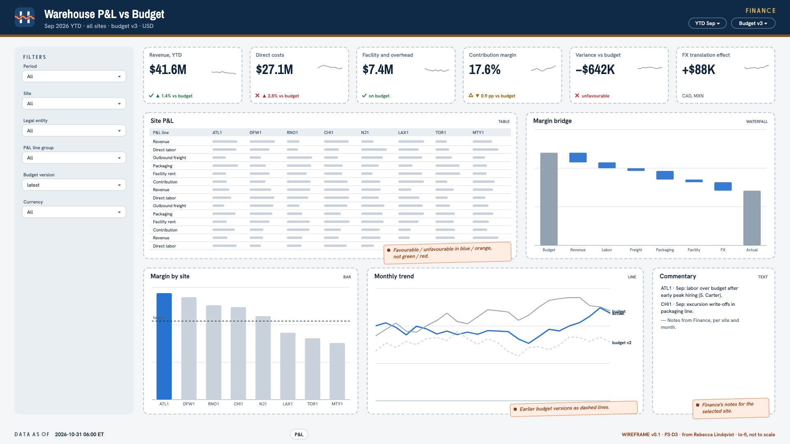

Questions it must answer
- How did each warehouse do against budget this month and year to date?
- Which P&L lines drive the variance - revenue, labor, freight or facility costs?
- How much of the variance comes from currency translation for the Canadian and Mexican sites?
- Which budget version are we comparing against, and what changed between versions?
Filters
- Period (month / quarter / YTD)
- Site
- Legal entity
- P&L line group
- Budget version (default latest)
- Currency (USD reporting / entity currency)
KPI definitions
| KPI | Definition |
|---|---|
| Revenue | GL accounts 4000-4030 by site (from the financial dimension), USD per the currency policy; customer credits and SLA penalties (4900) shown as their own line. |
| Direct costs | Direct labor (5000), outbound freight (5100) and packaging (5200) by site. |
| Facility and overhead | Accounts 6000-6400 (rent, utilities, equipment leases, IT, insurance) by site, using the allocation rules Alan approves for shared costs. |
| Contribution margin | Revenue − direct costs − facility and overhead; also as % of revenue. |
| Variance vs budget | Actual − budget for the selected budget version, in USD and %, marked favourable or unfavourable by line type. |
| FX translation effect | Difference between actuals translated at actual rates and at the rates the currency policy prescribes for budget comparison. Conflict. Whether budget comparisons use budget rates or actual rates is Alan's policy call (P3.S3.T3); Rebecca presents it to the board. Record the decision and label the tile. |
Visuals and layout from the spec
| Visual | Type | Notes |
|---|---|---|
| KPI row | kpi tiles | Revenue, direct costs, contribution margin, margin %, variance vs budget, FX effect |
| Site P&L | table | P&L lines (rows) × sites (columns): actual, budget, variance, variance %; favourable/unfavourable colouring |
| Margin bridge | waterfall | Budget margin → revenue → labor → freight → packaging → facility → FX → actual margin, for the selected site and period |
| Margin by site | bar | Contribution margin % by site, actual vs budget, YTD |
| Monthly trend | line | Actual vs budget revenue and margin for 24 months; earlier budget versions as dashed lines |
| Commentary | text | Finance's variance notes per site and month, shown next to the selected site |
1920×1080, Harborline light dashboard background with the Finance department accent.
Header band: Harborline lockup left, title "Warehouse P&L vs Budget", period, budget version and last-refresh time right.
Left filter rail (240 px): period, site, legal entity, P&L line group, budget version, currency.
Row 1: six KPI tiles across the full width.
Row 2: "Site P&L" table (left, 60%) and "Margin bridge" waterfall (right, 40%).
Row 3: "Margin by site" (left, 35%), "Monthly trend" (middle, 45%), "Commentary" panel (right, 20%).
Footer: data freshness, closed-month badge, account-mapping link, dashboard version.
Project 4 · Freight Audit & Carrier Performance
Stop paying carrier bills on trust. Requested by Beth Kowalczyk (Transportation Manager).
P4-D1 · Freight Audit
0 of 7Transportation
- Owner
- Beth Kowalczyk (Transportation Manager)
- Audience
- Beth Kowalczyk (Transportation Manager) every Monday after carrier bills post; AP and Alan Brooks for payment holds; Rebecca Lindqvist quarterly
- Refresh SLA
- Daily by 07:00 America/New_York, and within 2 hours of the Monday carrier-bill postings in AX.
- Access
- Transportation (Beth Kowalczyk) and Finance (Alan Brooks, Rebecca Lindqvist, Priya Raman). Never shared with carriers; carrier-facing material comes only from the P4-D2 single-carrier export.

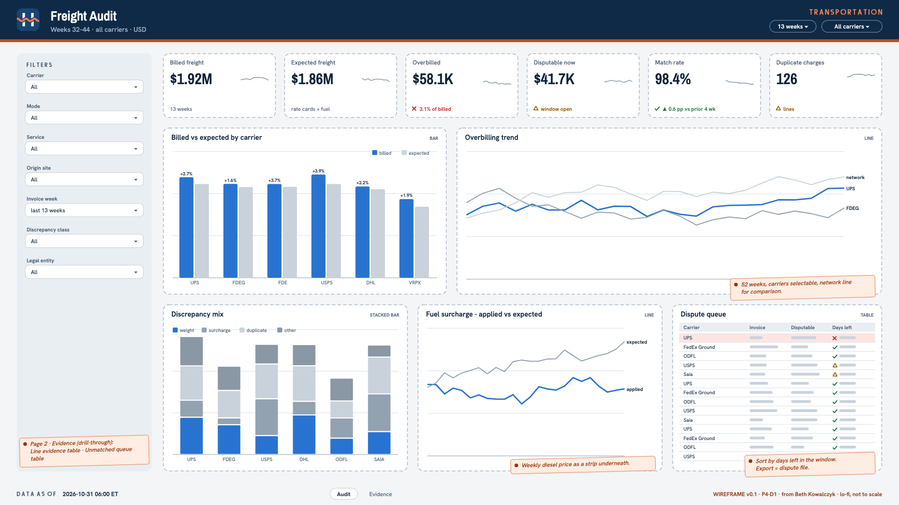

Questions it must answer
- What were we billed, and what should we have paid, by carrier and week?
- Which carriers overbill, by how much, and how (weight, duplicates, surcharges, service, fuel, base rate)?
- How much can still be disputed inside each carrier's window, and with what evidence?
- How many bill lines can't be matched to a shipment, and why?
- Is each carrier applying its own fuel-surcharge table at the right time?
Filters
- Carrier
- Mode (parcel / LTL)
- Service
- Origin site
- Invoice week (default last 13 weeks)
- Discrepancy class
- Legal entity
KPI definitions
| KPI | Definition |
|---|---|
| Billed freight | Sum of parsed carrier bill-line amounts (AX vendor invoices, CARRIER vendor group) for the period, USD per the currency policy. |
| Expected freight | Sum of expected charges for matched packages from the rate-card version in effect on the ship date (base + fuel + applicable accessorials). |
| Overbilled amount and % | Sum of (billed − expected) over lines flagged by an audit rule, and that sum ÷ billed freight. Under-billing is reported separately. |
| Disputable now | Overbilled amount on lines still inside the carrier's dispute window, as defined with Beth Kowalczyk. |
| Match rate | Matched package bill lines ÷ parsed package bill lines, by carrier. |
| Duplicate charges | Count and amount of packages billed more than once across invoices and weeks. |
| Fuel surcharge variance | Applied fuel % − expected fuel % for the week (carrier table, diesel reference file, carrier effective-date rule), by carrier. |
Visuals and layout from the spec
| Visual | Type | Notes |
|---|---|---|
| KPI row | kpi tiles | Billed, expected, overbilled %, disputable now, match rate, duplicate charges; delta vs prior 4 weeks |
| Billed vs expected by carrier | bar | Grouped bars per carrier for the selected period, overbilled % as a label |
| Overbilling trend | line | Weekly overbilled % per carrier, 52 weeks; carriers selectable; network line for comparison |
| Discrepancy mix | stacked bar | Per carrier, overbilled amount by class: weight, duplicate, residential or area surcharge, service level, fuel, base rate |
| Fuel surcharge - applied vs expected | line | Per carrier, weekly applied fuel % vs expected fuel %, with the weekly diesel price in a strip underneath |
| Dispute queue | table | Carrier, invoice, lines, disputable amount, days left in window; export button for the dispute file |
| Unmatched queue | table | Bill lines with no shipment, by carrier and reason category, with age |
| Line evidence | table | Drill-through: tracking or PRO number, ship date, measured weight and dimensions, billed weight, zone, service, expected components, billed amount, rule hit |
1920×1080, Harborline light dashboard background with the Transportation department accent.
Header band: Harborline lockup left, title "Freight Audit", selected weeks and last-refresh time right.
Left filter rail (240 px): carrier, mode, service, origin site, invoice week, discrepancy class, legal entity.
Row 1: six KPI tiles across the full width.
Row 2: "Billed vs expected by carrier" (left, 40%) and "Overbilling trend" (right, 60%).
Row 3: "Discrepancy mix" (left, 35%), "Fuel surcharge - applied vs expected" (middle, 35%), "Dispute queue" table (right, 30%).
Drill-through page "Evidence": "Line evidence" table (top, full width) and "Unmatched queue" table (bottom, full width).
Footer: data freshness, rate-card versions in use, dashboard version.
P4-D2 · Carrier Scorecard
0 of 7Transportation2 conflicting definitions
- Owner
- Beth Kowalczyk (Transportation Manager)
- Audience
- Beth Kowalczyk for the Q1 RFP and quarterly business reviews; Luis Moreno; each carrier sees only its own single-carrier export
- Refresh SLA
- Daily by 07:00 America/New_York with delivery events through the previous day; cost and billing accuracy refresh after the Monday carrier-bill postings.
- Access
- Transportation (Beth Kowalczyk), Operations leadership (Luis Moreno) and Finance see all carriers. Each carrier receives only a single-carrier export - its own metrics, no other carrier's name, and no Harborline cost or margin beyond its own billed amounts.

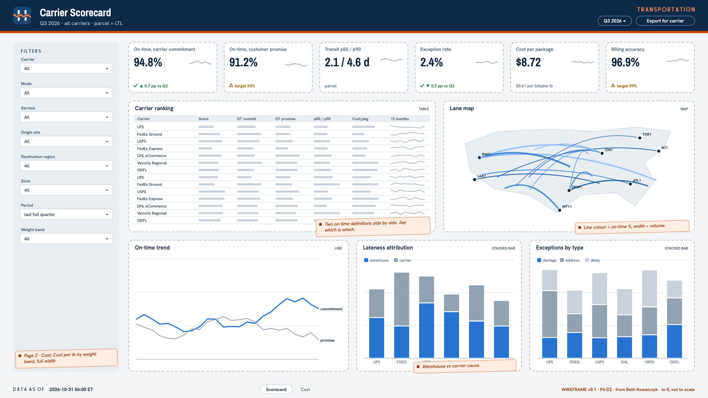

Questions it must answer
- Which carriers deliver on time, on which lanes and services?
- How long does transit take (median and p90) by lane, and is it improving?
- How often do packages hit exceptions (damage, address, delay, lost)?
- What does each carrier really cost per package and per pound, fully loaded?
- How accurate is each carrier's billing?
- When a delivery is late, is it Harborline's fault or the carrier's?
Filters
- Carrier
- Mode (parcel / LTL)
- Service
- Origin site
- Destination region (state)
- Zone
- Period (month / quarter; default last full quarter)
- Weight band
KPI definitions
| KPI | Definition |
|---|---|
| On-time delivery (carrier commitment) | Delivered packages delivered within the carrier's committed transit for the service ÷ delivered packages, per the catalog definition owned by Beth Kowalczyk. Conflict. Transportation measures against the carrier's commitment; Client Success measures against the promise made to the end customer. Both appear, with distinct catalog names agreed with Beth Kowalczyk and Omar Haddad (P4.S5.T1). |
| On-time delivery (customer promise) | Delivered packages delivered by the date promised to the end customer ÷ delivered packages, per the catalog definition owned by Omar Haddad. Conflict. Same disagreement as above, seen from Client Success; business vs calendar days and exclusions differ too. |
| Transit time p50 / p90 | Business days from first carrier scan to delivery, by carrier, service and lane. |
| Tender lag | Hours from WMS ship confirmation to first carrier scan; late deliveries split into warehouse-caused and carrier-caused per the rule agreed with Beth Kowalczyk. |
| Exception rate | Packages with at least one exception event ÷ packages shipped, by exception type. |
| Cost per package and per billable lb | Matched billed amount ÷ packages (or ÷ billable pounds), by carrier, service, lane and weight band; Canadian and Mexican bills converted per the currency policy. |
| Billing accuracy | 1 − (overbilled amount ÷ billed amount), from the freight audit. |
| Composite score | Weighted score of the measures above with the weights and minimum-volume rule agreed with Beth Kowalczyk (P4.S5.T8). |
Visuals and layout from the spec
| Visual | Type | Notes |
|---|---|---|
| KPI row | kpi tiles | Both on-time measures, transit p50, exception rate, cost per package, billing accuracy |
| Carrier ranking | table | One row per carrier: composite score, both on-time measures, transit p50/p90, exception rate, cost per package, billing accuracy, volume share; 12-month sparkline per row |
| Lane map | map | Origin sites to destination states; line colour = on-time % (carrier commitment), width = volume; filtered by carrier and service |
| On-time trend | line | Monthly on-time % for both definitions per carrier, 18 months; holiday and severe-weather markers |
| Lateness attribution | stacked bar | Late packages by cause (warehouse vs carrier) per carrier and origin site |
| Exceptions by type | stacked bar | Exception rate by type per carrier |
| Cost per lb by weight band | line | Cost per billable lb across weight bands, carriers as series, for the selected lane and service |
1920×1080, Harborline light dashboard background with the Transportation department accent.
Header band: Harborline lockup left, title "Carrier Scorecard", period and last-refresh time right; "Export for carrier" button.
Left filter rail (240 px): carrier, mode, service, origin site, destination region, zone, period, weight band.
Row 1: six KPI tiles across the full width.
Row 2: "Carrier ranking" table (left, 55%) and "Lane map" (right, 45%).
Row 3: "On-time trend" (left, 40%), "Lateness attribution" (middle, 30%), "Exceptions by type" (right, 30%).
Page 2 "Cost": "Cost per lb by weight band", full width.
Footer: data freshness, metric catalog link (both on-time definitions), dashboard version.
Project 5 · Client 360
One trusted view of every client, from pipeline to health. Requested by Hannah Price (Director of Sales Operations).
P5-D1 · Sales Pipeline
0 of 7Sales3 conflicting definitions
- Owner
- Hannah Price (Director of Sales Operations)
- Audience
- Hannah Price (Sales Ops), Account Executives, Daniel Reyes; read-only for Client Success leadership
- Refresh SLA
- Daily, complete by 07:00 America/New_York (before Hannah's Monday 09:00 pipeline call); data as-of timestamp in the footer.
- Access
- Sales Ops and executives see all opportunities. AEs see only opportunities they own. Client Success leadership has read-only access. No Contact personal data on this dashboard.

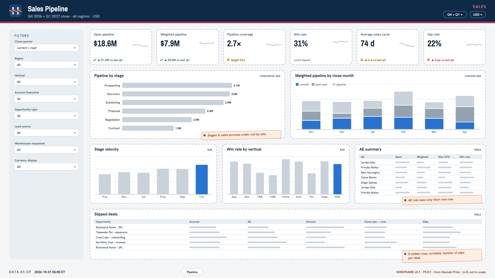

Questions it must answer
- How much open pipeline do we have by close quarter, and how much of it is likely to close?
- Is next quarter's pipeline enough to hit the new-business target?
- Where are deals stalling, and which deals keep slipping their close date?
- What is our win rate by vertical, region, lead source and AE?
- How much of the pipeline is expansion of existing clients vs new logos?
Filters
- Close quarter (default current + next)
- Region (Account Region__c)
- Vertical
- Account Executive (Opportunity owner)
- Opportunity type
- Lead source
- Warehouses requested
- Currency display (USD / native)
KPI definitions
| KPI | Definition |
|---|---|
| Open pipeline (USD) | Sum of Opportunity Amount for open opportunities (IsClosed = false) on surviving accounts, converted to USD with the Finance FX rules, by CloseDate quarter. Conflict. Hannah counts every open stage. Rebecca Lindqvist (CFO) only counts Commit + Best Case forecast categories when she talks about pipeline. Decide which one the headline tile shows and label the other. |
| Weighted pipeline (USD) | Sum of Amount × Probability for open opportunities, in USD. |
| Pipeline coverage | Open pipeline closing next quarter ÷ the remaining new-business target for that quarter (target kept as versioned seed data agreed with Hannah). |
| Win rate | Closed Won ÷ (Closed Won + Closed Lost) for opportunities closed in the period. Conflict. Hannah measures it by count of deals. Daniel wants it by amount. Show one as the headline and the other in the tooltip, as agreed. |
| Average sales cycle (days) | Mean days from CreatedDate to CloseDate for Closed Won opportunities closed in the period. |
| Slip rate | Share of opportunities whose CloseDate was pushed later at least once during the quarter (from Opportunity history). |
| Expansion share | Share of open pipeline amount where Type is Existing Business - Expansion or Renewal. Conflict. Hannah counts renewals as expansion. Omar says a renewal is retention, not growth. Agree the grouping. |
Visuals and layout from the spec
| Visual | Type | Notes |
|---|---|---|
| KPI row | kpi tiles | Open pipeline, weighted pipeline, coverage, win rate, sales cycle, slip rate; each with delta vs last quarter |
| Pipeline by stage | horizontal bar | Amount and count per StageName, ordered by the sales process |
| Weighted pipeline by close month | stacked bar | Stacked by ForecastCategoryName, next 6 months |
| Stage velocity | bar | Median days spent in each stage for deals closed in the last 4 quarters |
| Win rate by vertical | bar | Count-based and amount-based, as agreed |
| Slipped deals | table | Opportunity, account, AE, amount, original vs current close date, number of slips; sortable |
| AE summary | table | Per AE: open pipeline, weighted, won this quarter, win rate; hidden for AE role (they see only their row) |
1920×1080, Harborline light dashboard background with the Sales department accent.
Header band: Harborline lockup left, title "Sales Pipeline", as-of timestamp right.
Left filter rail (240 px): quarter, region, vertical, AE, type, lead source, warehouses, currency toggle.
Row 1: six KPI tiles across the full width.
Row 2: "Pipeline by stage" (left, 50%) and "Weighted pipeline by close month" (right, 50%).
Row 3: "Stage velocity" (left, 33%), "Win rate by vertical" (middle, 33%), "AE summary" table (right, 33%).
Row 4: "Slipped deals" table, full width, 8 visible rows.
Footer: data freshness, source "Salesforce via Harborline data platform", KPI definitions link.
P5-D2 · Client Health 360
0 of 7Client Success4 conflicting definitions
- Owner
- Omar Haddad (Director of Client Success)
- Audience
- Omar Haddad and the Client Success Managers, Hannah Price and AEs, Daniel Reyes
- Refresh SLA
- Daily, complete by 07:00 America/New_York, after the nightly score build and Salesforce write-back (06:30 ET); as-of timestamp in the footer.
- Access
- Client Success and Sales leadership and executives see all clients. CSMs see their book. AEs see accounts they own. Case SuppliedName and SuppliedEmail and all consignee PII are never shown.

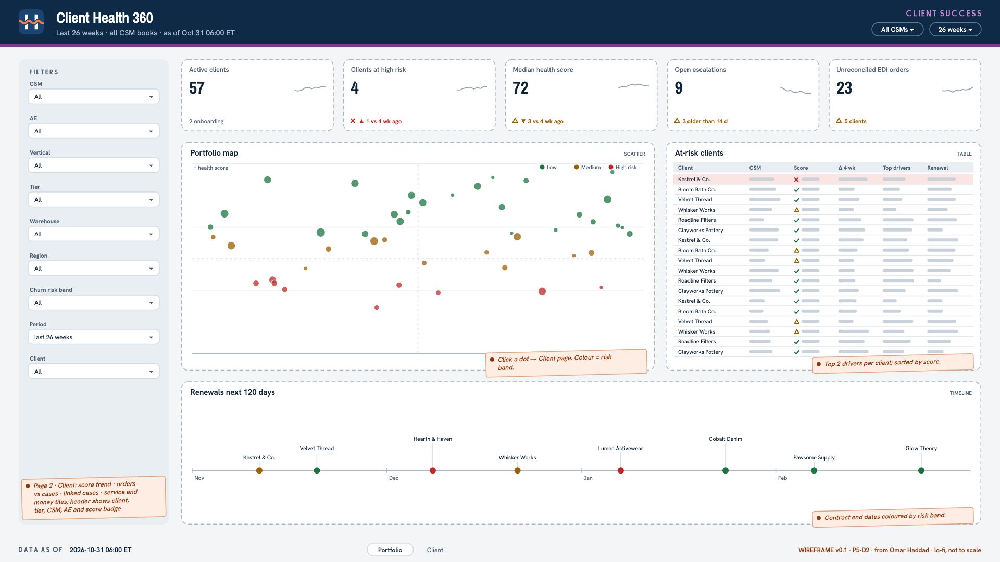

Questions it must answer
- Which clients are at risk this week, and why?
- How has a client's health moved over the last 6 months, and what drove the change?
- Is a client's order volume growing or shrinking compared with last quarter?
- Which cases does a client raise, and which orders, warehouses and carriers do they point to?
- Are we meeting the client's contract SLA, and are they paying on time?
- Which EDI orders from this client are unreconciled?
- Which renewals are coming up in the next 120 days, and how healthy are those clients?
Filters
- CSM (book)
- AE
- Vertical
- Tier
- Warehouse
- Region
- Churn risk band
- Period (default last 26 weeks)
- Client (drill page)
KPI definitions
| KPI | Definition |
|---|---|
| Health score (0–100) | The weekly client health score as defined in the metric catalog (owner Omar); the same value written to Account.Health_Score__c. Conflict. Omar wants a pure retention signal. Hannah wants growth reflected too. The catalog definition records what was agreed. |
| Churn risk band | Low / Medium / High from the agreed score thresholds; the same value written to Account.Churn_Risk__c. |
| Active clients | Clients that are active per the client master's agreed definition, at period end. Conflict. Sales counts an activated contract. Operations counts WMS owner status ACTIVE. Finance counts invoiced in the last 60 days. Show the agreed one and footnote the others. |
| Order trend (13 weeks) | Orders shipped in the last 13 weeks ÷ the prior 13 weeks − 1, per client. |
| Case rate per 1,000 orders | Cases opened in the period (spam, duplicates and merged excluded) ÷ orders shipped in the period × 1,000. Conflict. Omar counts every case. Luis Moreno wants cases with root cause Client Data excluded, because they aren't warehouse failures. Agree what the headline counts. |
| Ship-on-time vs contract SLA | Share of orders shipped within the client's contract SLA_Ship_Hours__c, compared against SLA_Target_Pct__c. Conflict. Ops measures from release to the floor. The contract clock starts when the WMS receives the order. Use the metric catalog entry from Warehouse Performance. |
| DSO (days) | Days sales outstanding per client, as defined in Billing Assurance & AR. |
| Open escalations | Cases currently open with IsEscalated = true. |
| Unreconciled EDI orders | Inbound 940s older than 24 h with no matching WMS order and not cancelled or resent. |
Visuals and layout from the spec
| Visual | Type | Notes |
|---|---|---|
| KPI row | kpi tiles | Active clients, clients at High risk, median health, open escalations, unreconciled EDI orders |
| Portfolio map | scatter | x = trailing-12-month revenue (USD), y = health score, color = risk band, size = order volume; click to drill |
| At-risk clients | table | Client, CSM, score, change vs 4 weeks ago, top 2 drivers, renewal date; sorted by score |
| Renewals next 120 days | timeline | Contract end dates colored by risk band |
| Client drill - score trend | line | Weekly score with risk band thresholds shaded, driver annotations |
| Client drill - orders vs cases | combo | Weekly orders shipped (bars) and case rate per 1,000 orders (line) |
| Client drill - linked cases | table | Case number, reason, status, linked order / tracking number, warehouse, carrier, credit |
| Client drill - service and money | kpi tiles | SLA attainment vs target, DSO, open AR by aging bucket, unreconciled EDI orders |
Two pages, 1920×1080, Harborline light dashboard background with the Client Success department accent.
Page 1 "Portfolio". Header band: lockup, title, as-of timestamp. Left filter rail (240 px).
Row 1: five KPI tiles. Row 2: "Portfolio map" scatter (left, 60%) and "At-risk clients" table (right, 40%).
Row 3: "Renewals next 120 days" timeline, full width.
Page 2 "Client". Header shows the client name, tier, CSM, AE and the current score badge colored by risk band.
Row 1: service and money KPI tiles. Row 2: "Score trend" (left, 50%) and "Orders vs cases" (right, 50%).
Row 3: "Linked cases" table, full width.
Footer on both pages: data freshness, sources (WMS, AX, Salesforce, EDI), KPI definitions link.
Project 6 · Real-Time Operations
A live picture of every building, at most 5 minutes behind. Requested by Luis Moreno (VP Operations).
P6-D1 · Live Operations Board
0 of 7Operations2 conflicting definitionsdark theme (TV)
- Owner
- Luis Moreno (VP Operations)
- Audience
- Luis Moreno (VP Operations), site General Managers (e.g. Shanice Carter, ATL1), shift leads; TV wall in each site's shipping office and on mobile
- Refresh SLA
- Data ≤ 5 minutes behind the WMS (P95, measured end to end) during site operating hours; page auto-refresh every 60 s; freshness light always visible.
- Access
- Luis and operations leadership see all sites. GMs and shift leads see their own site. No consumer PII (ship_to name, address, phone, email); workers are shown by username only. The board runs on shared TVs.

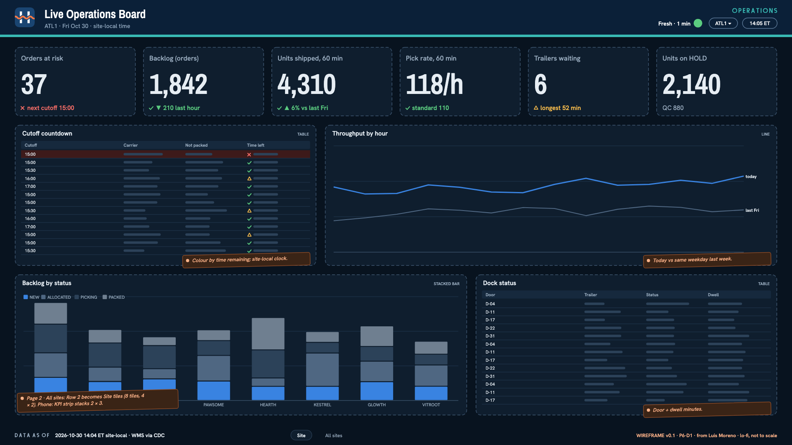

Questions it must answer
- Which open orders will miss today's carrier cutoff if nothing changes?
- Where is backlog building right now, and in which status?
- Are we shipping at the pace we need this hour compared with the same hour last week?
- Which inbound trailers have been waiting too long to be received?
- How much inventory is on HOLD right now, and where?
- Is the board itself fresh, and can I trust it?
Filters
- Warehouse (defaults to the viewer's site; "All sites" for Luis)
- Client
- Order type (B2C / B2B)
- Carrier mode (parcel / LTL)
KPI definitions
| KPI | Definition |
|---|---|
| Orders at risk | Open orders due to ship today (requested_ship_date ≤ today, site-local) that are not yet PACKED, with less than the agreed buffer (Luis) before the site's carrier cutoff for their mode. Conflict. Luis uses the site's carrier cutoff. Omar Haddad says the client's contract SLA hours are what matter. Agree which one drives the headline and show the other as a filter. |
| Backlog (orders) | Orders currently in an open status, per the definition in the metric catalog. Conflict. Ops counts released and not shipped (the floor's workload). Client Success counts received and not shipped (what the client sees). Record the decision. |
| Units shipped (last 60 min) | Sum of shipped quantity on shipments confirmed in the last 60 minutes, site-local. |
| Pick rate (last 60 min) | PICK tasks completed in the last 60 minutes ÷ distinct users who completed at least one PICK task in that window. |
| Trailers waiting | Receipts ARRIVED or RECEIVING for longer than the agreed dwell threshold. |
| Inventory on HOLD | Units and distinct lots with inventory status HOLD, current state. |
| Board freshness | P95 of (time now − source commit time of the newest applied change) across the board's tables over the last 15 minutes; green ≤ 5 min, amber ≤ 10 min, red above. |
Visuals and layout from the spec
| Visual | Type | Notes |
|---|---|---|
| KPI strip | kpi tiles | Orders at risk, backlog, units shipped last 60 min, pick rate, trailers waiting, units on hold; large numerals readable at 3 m |
| Cutoff countdown | table | Next carrier cutoffs today (site-local) with orders not yet packed per cutoff, colored by time remaining |
| Throughput by hour | line | Units shipped per hour today vs the same weekday last week, site-local hours |
| Backlog by status | stacked bar | Open orders by status per site (all-sites view) or per client (site view) |
| Site tiles | tile grid | All-sites view only: one tile per warehouse with at-risk count, backlog, freshness light |
| Dock status | table | Trailers arrived / receiving with door and dwell minutes |
| Freshness light | status indicator | Green / amber / red from the SLO monitor, with the last-updated time |
1920×1080 TV mode on the Harborline dark dashboard background with the Operations department accent.
Header band: Harborline lockup left, title "Live Operations Board", site selector, local site clock, freshness light (top right, prominent).
Row 1: KPI strip, six tiles with numerals at least 72 px.
Row 2: "Cutoff countdown" table (left, 40%) and "Throughput by hour" line (right, 60%).
Row 3: "Backlog by status" stacked bar (left, 60%) and "Dock status" table (right, 40%).
All-sites variant: Row 2 is replaced by "Site tiles" (8 tiles, 4×2 grid).
Footer: "Data as of <time> site-local · source WMS via CDC", SLO target text.
Mobile (phone) variant: the KPI strip stacks 2×3, then cutoff countdown, then backlog.
Project 7 · Cold Chain & Lot Traceability
Prove every lot stayed in range, and find it fast when it didn't. Requested by Dr. Ayesha Khan (Quality & Food Safety Manager).
P7-D1 · Cold Chain Monitor
0 of 7Quality2 conflicting definitions
- Owner
- Dr. Ayesha Khan (Quality & Food Safety Manager)
- Audience
- Dr. Ayesha Khan (Quality & Food Safety), Grace Liu (Facilities & Controls), CHI1 and TOR1 site management, Luis Moreno
- Refresh SLA
- Readings ≤ 15 minutes behind gateway ingestion; episode and lot tables refreshed every 15 minutes; live alerts handled separately (≤ 15 minutes).
- Access
- Quality sees everything. Operations sees its own sites. Facilities (Grace) has full access to sensor health. No consignee PII on this dashboard. Not client-facing.

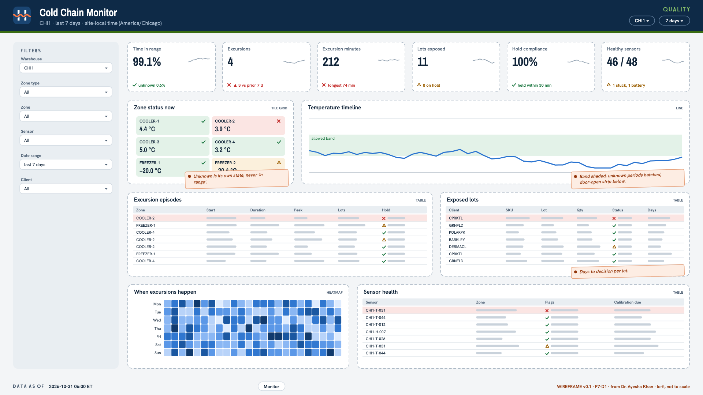

Questions it must answer
- Are all regulated zones in range right now?
- How many excursions did we have in the period, how long did they last, and how severe were they?
- Which lots were exposed, and were they held, released or destroyed, and how quickly?
- Which sensors are unhealthy (stuck, spiking, silent, low battery, calibration overdue), and which zones are blind?
- When do excursions happen (hour of day, day of week), and what door activity surrounds them?
Filters
- Warehouse (default CHI1)
- Zone type (COOLER / FREEZER / AMBIENT)
- Zone
- Sensor
- Date range (default last 7 days)
- Client (for exposed lots)
KPI definitions
| KPI | Definition |
|---|---|
| Time in range | Sensor-minutes in range ÷ sensor-minutes in the period, per zone, using the effective-dated thresholds; periods with an unhealthy sensor are classed as unknown. Conflict. Ayesha counts unknown time against compliance (conservative). Luis wants unknown time excluded from the denominator. Show the agreed headline and the unknown share next to it. |
| Excursions | Count of excursion episodes meeting the SOP duration rule for their zone type in the period. Conflict. Luis wants short door-open blips during loading excluded. Quality's SOP decides. Record the rule version used. |
| Excursion minutes | Sum of episode durations in minutes, plus degree-minutes outside range, for severity. |
| Lots exposed | Distinct lots stored in an affected zone during at least one episode in the period. |
| Hold compliance | Lots exposed and placed on HOLD ÷ lots exposed. |
| Hold review time (days) | Median days from HOLD to RELEASE or DESTROY for lots held after an excursion, against the target agreed with Ayesha. |
| Mean kinetic temperature | MKT per zone over the period, using the activation energy documented in the metric catalog. |
| Healthy sensors | Share of active temperature sensors with no stuck, spike, dropout or overdue-calibration flag at the end of the period. |
Visuals and layout from the spec
| Visual | Type | Notes |
|---|---|---|
| KPI row | kpi tiles | Time in range (with unknown share), excursions, excursion minutes, lots exposed, hold compliance, healthy sensors |
| Zone status now | tile grid | One tile per regulated zone: current reading, in range / excursion / unknown status color from the palette |
| Temperature timeline | line | Selected zone or sensor readings with the threshold band shaded, excursion episodes highlighted, unknown periods hatched, door-open intervals as a strip below |
| Excursion episodes | table | Start and end (site-local), duration, peak, degree-minutes, rule version, lots exposed, hold status |
| Exposed lots | table | Client, SKU, lot, quantity, status (held / released / destroyed), days to decision |
| When excursions happen | heatmap | Hour of day × day of week, excursion minutes |
| Sensor health | table | Sensor, zone, flags (stuck / spike / dropout / drift / battery), calibration due date |
1920×1080, Harborline light dashboard background with the Quality department accent; status colors (good / warn / bad / unknown) from the brand palette.
Header band: lockup, title "Cold Chain Monitor", site selector, as-of time.
Left filter rail (240 px).
Row 1: KPI row, six tiles. Row 2: "Zone status now" tile grid (left, 30%) and "Temperature timeline" (right, 70%).
Row 3: "Excursion episodes" table (left, 55%) and "Exposed lots" table (right, 45%).
Row 4: "When excursions happen" heatmap (left, 40%) and "Sensor health" table (right, 60%).
Footer: data freshness, rule version in force, KPI definitions link.
P7-D2 · Recall Trace
0 of 7Quality
- Owner
- Dr. Ayesha Khan (Quality & Food Safety Manager)
- Audience
- Quality (Dr. Ayesha Khan and the recall response group), Omar Haddad for client communication, Daniel Reyes during a live recall
- Refresh SLA
- Daily by 06:00 site-local; on-demand refresh during a live recall completes within 15 minutes of being triggered; data as-of shown prominently.
- Access
- Quality recall role sees clear consignee data and may export. Other Quality users and Omar see masked consignee data. Every export is logged (who, when, request id, rows). Not client-facing.

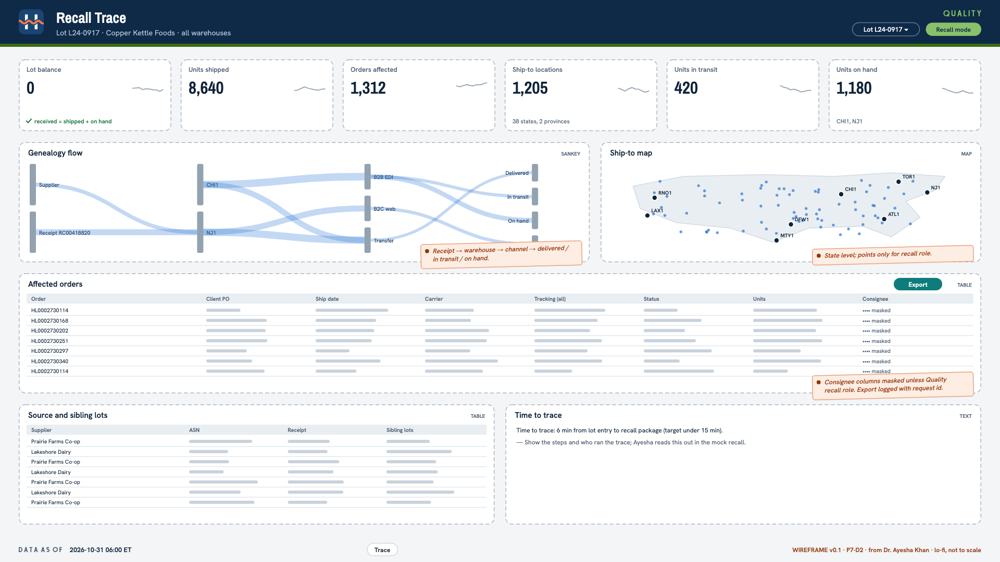

Questions it must answer
- For a given lot (or SKU and date range), which orders, shipments and ship-to locations received it, and how many units?
- How many units are still in our buildings, and are they on hold?
- Which shipments are delivered, which are still in transit, and with which carriers?
- Where did the lot come from (supplier, ASN, receipt), and which other lots arrived with it?
- How long did it take us to produce the trace?
Filters
- Client
- SKU
- Lot (multi-select)
- Receipt date range
- Expiry date range
- Warehouse
KPI definitions
| KPI | Definition |
|---|---|
| Lot balance | Received − shipped − destroyed ± adjustments ± returns − on hand; must be 0 for a complete trace. |
| Units shipped | Units of the selected lots shipped to customers, from the genealogy. |
| Orders affected | Distinct orders that shipped at least one unit of the selected lots. |
| Ship-to locations affected | Distinct ship-to addresses (normalized) that received the selected lots. |
| Units in transit | Units on shipments not yet delivered per carrier events. |
| Units on hand | Units of the selected lots in inventory now, split by status (HOLD / AVAILABLE). |
| Trace completeness | Shipped units with a linked shipment and tracking number ÷ shipped units. |
| Time to trace | Minutes from the recall request being logged to the package being exported. |
Visuals and layout from the spec
| Visual | Type | Notes |
|---|---|---|
| Lot summary | kpi tiles | Lot balance (must show 0 in green), units shipped, orders, ship-tos, in transit, on hand |
| Genealogy flow | sankey | Receipt / supplier → warehouse → order channel → delivered / in transit / on hand / destroyed |
| Ship-to map | map | State or province level for most roles; point level only for the Quality recall role |
| Affected orders | table | Order, client PO, ship date, carrier, tracking (all versions), status, units; consignee columns masked unless Quality recall role |
| Source and sibling lots | table | Supplier, ASN, receipt, other lots on the same receipt |
| Export | action | Generate recall package (logged with request id); Quality recall role only |
1920×1080, Harborline light dashboard background with the Quality department accent.
Header band: lockup, title "Recall Trace", lot selector (large, top left), as-of time and "Recall mode" badge when on-demand refresh is active.
Row 1: Lot summary tiles, with lot balance first.
Row 2: "Genealogy flow" sankey (left, 60%) and "Ship-to map" (right, 40%).
Row 3: "Affected orders" table, full width, with the Export button above it on the right.
Row 4: "Source and sibling lots" table (left, 50%) and the time-to-trace note (right, 50%).
Footer: data freshness, masking notice, KPI definitions link.
Project 8 · Client Portal & Executive Scorecard
Share data safely, and run the company on one page. Requested by Daniel Reyes (Chief Executive Officer).
P8-D1 · Client Portal
0 of 7Client Success2 conflicting definitions
- Owner
- Omar Haddad (Director of Client Success)
- Audience
- Client users (external, per-client), Harborline Client Success Managers on behalf of their clients, Omar Haddad
- Refresh SLA
- Hourly from 06:00 to 22:00 in the client's primary site time zone; daily otherwise. Data as-of shown on every page.
- Access
- Row-level security by client entitlement (client master). Client users see only their own owner code(s). CSMs see the clients in their book. Consignee PII is handled per Mei Tanaka's decision for client roles and masked by default. No other client's name, logo or data ever appears. All access logged.

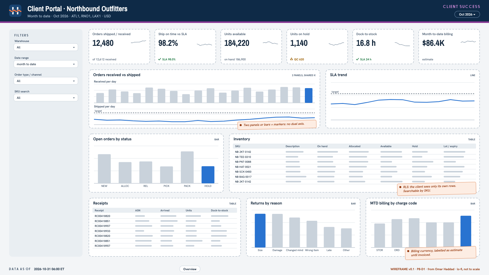

Questions it must answer
- Where are my orders, and what is still open?
- Did Harborline meet our contract SLA this month?
- What inventory do I have, what's available, and what's on hold?
- What did you receive for us, and how fast did it get to stock?
- What came back as returns, and why?
- What will we be billed for this month so far?
Filters
- Warehouse (only the client's sites)
- Date range (default month to date)
- Order type / channel
- SKU search
KPI definitions
| KPI | Definition |
|---|---|
| Orders received / shipped | Orders received by the WMS and orders shipped in the period, for the viewer's client only. |
| Ship on time vs contract SLA | Share of orders shipped within the client's contract SLA_Ship_Hours__c, shown against SLA_Target_Pct__c. Conflict. Ops measures from release to the floor. The contract clock starts when the WMS receives the order. Client-facing numbers must use the contract definition. Confirm with Omar. |
| Units on hand / available / on hold | Current inventory units for the client, with available = on hand − allocated, and on hold = status HOLD. |
| Dock-to-stock (hours) | Median hours from receipt arrival to putaway completion for receipts completed in the period. |
| Return rate | Units returned ÷ units shipped in the period. |
| Month-to-date billing | Billable activity accrued this month in the client's billing currency, by charge code. Conflict. Finance (Alan Brooks) says accrued is not invoiced, and adjustments can change before month end. Label it as an estimate and agree the wording with Alan. |
| Open cases | The client's Salesforce cases that are not closed. |
Visuals and layout from the spec
| Visual | Type | Notes |
|---|---|---|
| KPI row | kpi tiles | Orders shipped, ship on time vs SLA (with target marker), units available, units on hold, dock-to-stock, MTD billing |
| Orders received vs shipped | combo | Daily bars received, line shipped, last 30 days |
| SLA trend | line | Weekly ship-on-time % vs the contract target line |
| Open orders by status | bar | Count by status; drill to order list (no consignee PII unless Mei's rule allows it for this role) |
| Inventory | table | SKU, description, on hand, allocated, available, on hold, lot / expiry where lot-controlled; searchable |
| Receipts | table | Receipt, ASN, arrived, completed, units, dock-to-stock hours |
| Returns by reason | bar | Units by reason code, last 90 days |
| MTD billing by charge code | bar | In billing currency, labelled as estimate |
1920×1080, Harborline light dashboard background; Harborline brand with "Client Portal · <Client name>" in the header and no client logo; Client Success accent.
Header band: lockup, client name, period selector, as-of time.
Left filter rail (240 px): warehouse, date range, order type, SKU search.
Row 1: six KPI tiles. Row 2: "Orders received vs shipped" (left, 60%) and "SLA trend" (right, 40%).
Row 3: "Open orders by status" (left, 35%) and "Inventory" table (right, 65%).
Row 4: "Receipts" table (left, 40%), "Returns by reason" (middle, 30%) and "MTD billing by charge code" (right, 30%).
Footer: data freshness, "Billing figures are estimates until invoiced", support contact (the client's CSM).
P8-D2 · Executive Scorecard
0 of 7Executive1 conflicting definition
- Owner
- Daniel Reyes (Chief Executive Officer)
- Audience
- Daniel Reyes (CEO) and the executive team (Rebecca Lindqvist, Luis Moreno, Hannah Price, Omar Haddad); board pack export
- Refresh SLA
- Closed months are frozen snapshots published by the 3rd business day after AX month-end close. The current month to date refreshes daily by 07:00 America/New_York and is labelled as provisional.
- Access
- Executives only (Daniel, Rebecca, Luis, Hannah, Omar, Sam). Classified Confidential. No PII. PDF export allowed for the board pack and logged.

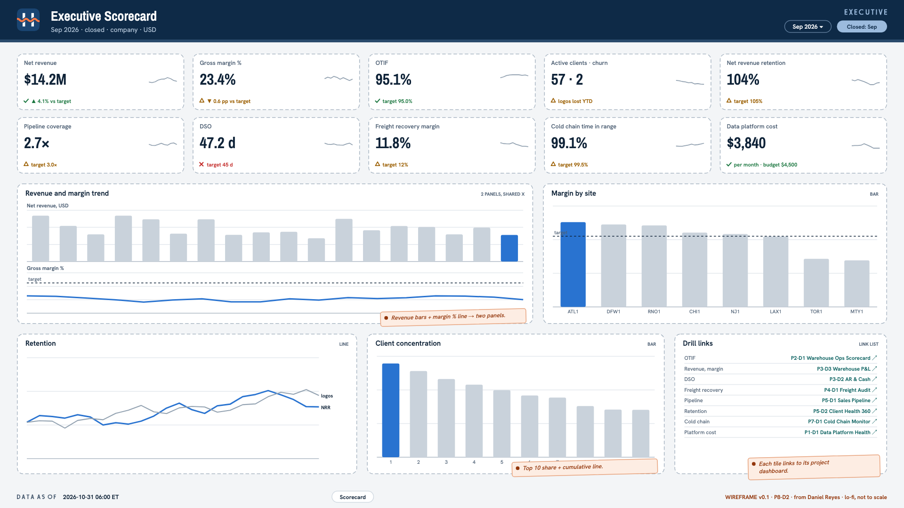

Questions it must answer
- Are we growing, and is the growth profitable?
- Which sites and verticals drive margin?
- Are we keeping our clients, and is the pipeline enough to replace the ones we lose?
- Are we delivering the service levels we promise?
- How fast are we turning invoices into cash?
- Are cold-chain and data-platform risks under control?
- Where should I look deeper?
Filters
- Period (month / quarter / YTD; closed months from frozen snapshots)
- Legal entity (us01 / ca01 / mx01)
- Warehouse
- Vertical
KPI definitions
| KPI | Definition |
|---|---|
| Net revenue (USD) | Revenue posted to GL 4000–4030 less customer credits and SLA penalties (4900), in USD at Finance's FX rules, for the period. |
| Gross margin % | (Net revenue − direct labor 5000 − outbound freight 5100 − packaging 5200) ÷ net revenue. Conflict. Rebecca includes facility rent (6000) by site in gross margin. Luis excludes it because site GMs can't control it. Daniel decides; record it. |
| OTIF % | Company-wide on-time-in-full from the metric catalog (Warehouse Performance), unchanged. |
| Active clients and logo churn | Active clients at period end (Client 360 definition) and clients lost in the trailing 12 months. |
| Net revenue retention | Trailing-12-month revenue from clients active 12 months ago ÷ their revenue in the prior 12 months. |
| Pipeline coverage | As defined on the Sales Pipeline dashboard (Client 360). |
| DSO (days) | Company DSO as defined in Billing Assurance & AR. |
| Freight recovery margin | Freight recovery revenue (4030) ÷ outbound freight expense (5100) − 1. |
| Cold chain time in range | As defined on the Cold Chain Monitor, regulated zones only. |
| Data platform cost per month | Platform compute and storage cost for the month from the cost report (actual on your tier, plus paid-tier projection). |
Visuals and layout from the spec
| Visual | Type | Notes |
|---|---|---|
| KPI grid | kpi tiles | 10 tiles: value, target, variance vs target and prior year, 13-month sparkline, owner commentary on hover |
| Revenue and margin trend | combo | Monthly net revenue (bars) and gross margin % (line), 24 months, target line |
| Margin by site | bar | Gross margin % and revenue per warehouse, sorted |
| Client concentration | bar | Top 10 clients' share of revenue, cumulative line |
| Retention | line | Active clients, logo churn and net revenue retention, monthly |
| Drill links | link list | Links to each project dashboard behind a KPI |
1920×1080, Harborline light dashboard background with the Executive department accent.
Header band: lockup, title "Executive Scorecard", period selector, "Closed: <month>" or "Provisional MTD" badge.
Row 1–2: KPI grid, 5 × 2 tiles with sparklines.
Row 3: "Revenue and margin trend" (left, 60%) and "Margin by site" (right, 40%).
Row 4: "Retention" (left, 40%), "Client concentration" (middle, 35%) and "Drill links" (right, 25%).
Footer: snapshot id, data freshness, Confidential marking, KPI definitions link.